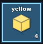
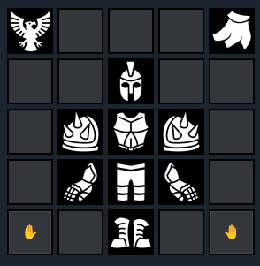
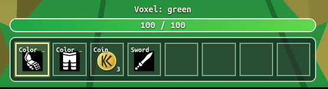

🎮 Game
Runtime and main local systems.
Game Flow:
- Load page
- Check screen mode
- Detect anonymous / log in user
Definition: Kolorlando is a 3D game. A voxel world in which you play a voxel character.
About: This file contains extensive ordered lists, google orgcharts and reference images.
done
not done
not used (done but not implemented)
to-improve
implemented-in
Runtime and main local systems.
Game Flow:
script.js, code/graphics/screen.js
code/graphics/screen.js, style.css, script.js
script.js, singleplayer.html, style.css
script.js, code/graphics/screen.js


script.js, code/graphics/camera.js
Zoomable camera from First Person mode to Third Person Mode script.js, code/graphics/camera.js
script.js, code/graphics/camera.js
script.js, code/graphics/camera.js
8 item slots code/UI/inventory.js, singleplayer.html, style.css
code/UI/minimap.js, singleplayer.html, style.css
code/UI/chat.js, singleplayer.html, style.css
Shows FPS (Frames per second) and player coords (XYZ) script.js, singleplayer.html, style.css
Mobile only script.js, singleplayer.html, style.css
Shows Encyclopedia, Inventory, Character, Settings and About code/UI/menu.js, code/UI/menuPanelMarkup.js, singleplayer.html, multiplayer.html, style.css
Inventory, hotbar, encyclopedia and equipment icons code/UI/icon.js

script.js
Crouch has no dedicated file yet.
script.js
script.js, code/commands.js
script.js, code/commands.js
32 item slots, 99 stack item slots
code/UI/inventory.js, script.js, singleplayer.html
singleplayer.html, script.js, code/entities/entityModel.js, sfcFace.js, index.html, /web/SquareFaceCreator/index.html, /web/SquareFaceCreator/script.js
singleplayer.html, style.css

weapons/goxels (gltf models scaled 0.1 and centered on X Y Z) script.js, code/entities/itemAppearance.js
with health bar, selected voxel playerHud.js, code/UI/inventory.js, singleplayer.html, style.css

script.js, code/entities/entityModel.js
script.js
Moving, pulling or pushing objects around from a distance
Little user info panel UI/userProfile.html
Items now have stable ids, labels, descriptions, icons and world appearance data code/item.js
Weapons and tools can declare hand attachment data and action type code/item.js
Wearable item definitions exist, but the full equipment system is not connected yet code/item.js, singleplayer.html, style.css
Inventory-facing items are moving away from display-name-only identity code/item.js, code/UI/inventory.js, script.js
world, player,
world, player,
code/UI/worldMenu.html and code/UI/worldMenu2.html
code/entities/entity.js, maps/voxelandiaMap.js, maps/cityMap.js, script.js
No implementation file yet.
No implementation file yet.
code/entities/vehicle.js, script.js
code/entities/vehicle.js, script.js
maps/voxelandiaMap.js, code/UI/inventory.js
script.js, maps/voxelandiaMap.js
code/UI/inventory.js, script.js, singleplayer.html
Item created, you can save boxels though command /saveBoxel myHouse and spawn them by /spawn myHouse
Select a blue voxel box, place blocks in bulk. Save and load voxel data
Edit voxels on a 16³ microvoxel basis. Creating custom voxels.
Self-explanatory
Voxel and Boxel classes
Voxel compatibility layer
3 classes
.microxel
-Microxel
--position = { x:0, y:0, z:0}
--color = "#ffffff"
.voxel
-Voxel
--position = { x:0, y:0, z:0}
--color = "#ffffff"
Will draw a 6 face cube with color on it
--texture = "grass.png"
Will draw a 6 face cube with "grass.png" on each face
--pixelTexture = []
We will asign a custom texture painting pixels on each face
--microxels = [];
.boxel
-Boxel
--position = { x:0, y:0, z:0}
--size = 15^3
--voxels = []
.world
-World
--boxels = []
script.js, singleplayer.html
Shows debug information like collisions or raycasts code/commands.js, script.js
(enables flying) code/commands.js, script.js
(respawns player) code/commands.js, script.js
Saves a Boxel locally using Boxel Selection Tool's selection as reference
Spawns a Boxel, boxelmenu.html
Avoid colliding with colliders like a Ghost
Remote sessions detection code/multiplayer/multiplayer.js, multiplayer.html, index.html
Low-latency updates on position, rotation and animation. code/multiplayer/multiplayer.js
index.html, code/auth/Kusers.js, webscript.js, webstyle.css
code/UI/chat.js, singleplayer.html, multiplayer.html, style.css
Play Online Plan
- Kolorlando online with Supabase
- Online features
- anonymous players can join the world
- players can see other players in the world
- create a Supabase project
- design the database tables
- add player login or guest profiles
- connect the game to Supabase
- save and load game data
- add multiplayer or shared scores if needed
- test everything locally
- deploy the game online
- test the live version
0 - Most basic version:
Supabase Realtime Presence
- required custom tables: `0`
- anonymous login can use Supabase Auth anonymous users
- live player presence can use Supabase Realtime Presence
- Supabase still stores auth users internally, but that is not a table we create
Issues: SRP is laggy for low latency changes
1 - Supabase Broadcast
***A
- Broadcast + Presence plan
- Step 1
- keep Supabase anonymous auth as the player identity layer
- keep one shared room channel for the same world
- in Supabase, create the project and copy the project URL and anon key
- in Supabase Auth, enable anonymous sign-ins
- Step 2
- keep Presence only for lightweight state
- use Presence for join, leave, session id, player id, and maybe display name or color
- stop using Presence for frequent position updates
- anonymous auth gives a stable guest user id
- it does not guarantee one different player identity per browser tab
- Step 3
- add Broadcast for real-time gameplay messages
- use Broadcast for position, rotation, moving state, emotes, attacks, and temporary actions
- treat Broadcast as transient live traffic, not saved data
- Step 4
- on connect, subscribe to the room channel
- sign in anonymously first
- after subscription, publish Presence once so the player appears in the online list
- then start listening for Broadcast packets from other players
- Step 5
- send local transform updates through Broadcast on a throttle
- start around `10` sends per second
- only send when the player changed enough in position, rotation, or movement state
- keep a separate generated session id for each tab or page session
- use auth user id as player identity and session id as live instance identity
- Step 6
- keep remote players client-side
- when a Broadcast packet arrives, update that remote player's target transform
- smooth movement locally with interpolation so motion still looks fluid between packets
- Step 7
- use Presence sync to manage the roster
- create remote avatars when a new session appears
- remove remote avatars when a session disappears
- use Broadcast only to drive motion and temporary actions for sessions that are already present
- Step 8
- handle late join and fallback behavior
- when a player first appears through Presence, place them at a safe default until their first Broadcast transform arrives
- if Broadcast packets stop for a short time, keep the avatar visible but idle
- if Presence removes the session, delete the avatar
- Step 9
- keep database tables at `0` for this version
- add a `players` table only if you want persistent profile data
- add a `world_state` table only if world edits must survive after everyone leaves
- Step 10
- test in this order
- one tab: confirm connect, roster count, and no errors
- two tabs: confirm both players appear and movement is smoother than Presence-only
- three to five tabs: confirm traffic stays stable and players clean up correctly on leave
- remote network throttling: confirm interpolation still looks acceptable
- Step 11
- success criteria
- Presence updates the online roster correctly
- Broadcast drives movement with lower visible lag
- no custom tables are required for the first playable online version
Keeping one session for logged-in user
add userId to Presence
detect duplicate authenticated users
choose winner by timestamp
disconnect older tab
later, if needed, back it with a DB active_session
***
--------
- Custom tables for persistent data
- `players` for saved profile, color, last position, settings, or progress
- `world_state` if world changes must persist after everyone leaves
- `messages` for chat
code/UI/menu.js, code/UI/menuPanelMarkup.js, style.css
code/UI/menu.js, code/UI/menuPanelMarkup.js, singleplayer.html, multiplayer.html
code/UI/menuPanelMarkup.js, script.js
code/UI/menuPanelMarkup.js, singleplayer.html, multiplayer.html
UI only for now.
Voxel generation -> chunk -> voxel face culling and greedy meshing
2. Prioridad crítica: reemplazar claves string "x,y,z" por datos compactos
El guardado usa buildVoxelEditKey(cellX, cellY, cellZ) y almacena todo en voxelEdits con claves tipo string. Eso mete sobrecoste de objetos, strings y hashing.
Pasa el runtime a typed arrays o índices numéricos por chunk.
Deja las strings solo para exportación, debug o compatibilidad.
Impacto: muy alto en RAM.
3. Prioridad crítica: separar el mundo en chunks
El sistema actual de voxelEdits es global por mundo, no chunkificado.
Divide el mapa en chunks de 16³ o 32³.
Carga, genera y guarda solo chunks cercanos al jugador.
Descarga chunks lejanos de RAM.
Impacto: muy alto en RAM y escalabilidad.
4. Prioridad muy alta: regenerar solo el chunk tocado
Si cambias un vóxel, no debes reconstruir más geometría de la necesaria.
Cada edición debería marcar como “dirty” solo ese chunk y quizá chunks vecinos si toca borde.
Impacto: muy alto en CPU y fluidez.
5. Prioridad muy alta: face culling de vóxeles ocultos
Si todavía estás creando caras internas entre bloques pegados, estás quemando RAM GPU y draw cost para nada.
Renderiza solo las caras expuestas.
Impacto: brutal si el mundo tiene masa sólida.
6. Prioridad muy alta: greedy meshing
Después del culling, une caras contiguas del mismo material en quads grandes.
Es de las mejores mejoras en voxel engines.
Impacto: brutal en vértices, buffers y GPU.
7. Prioridad alta: revisar el renderer extra de preview
script.js importa mucho sistema y además ya te vi con una estructura bastante cargada; si mantienes una segunda escena/renderer para preview del personaje, eso suma memoria GPU y lógica paralela.
Mejor:
pausar el preview cuando no esté visible
bajar resolución del canvas preview
reutilizar recursos si puedes
Impacto: alto si el menú está vivo mucho tiempo.
8. Prioridad alta: reducir la cantidad de recursos residentes
script.js centraliza muchísimas importaciones: audio, minimapa, menú, inventario, chat, entidades, vehículos, loaders, multijugador, mapas... todo eso junto puede dejar demasiadas cosas vivas a la vez.
Carga módulos pesados bajo demanda.
No inicialices sistemas que no se usan en la pantalla actual.
Impacto: alto en RAM inicial y tiempo de arranque.
9. Prioridad alta: reutilizar materiales y geometrías
En voxel games, crear materiales o geometrías repetidas te destroza memoria y GC.
Usa atlas de texturas y un conjunto pequeño de materiales compartidos.
Libera con dispose() lo que ya no uses.
Impacto: alto en GPU RAM y fugas.
10. Prioridad media-alta: separar datos por tipo
No mezcles en la misma estructura:
vóxeles
entidades
jugador
iluminación
metadata
Ahora el save ya separa player y voxelEdits, lo cual va bien como base.
Llévalo más lejos dentro del runtime.
Impacto: medio-alto en orden y mantenimiento.
11. Prioridad media: lazy loading de mapas y assets
En script.js importas varios mapas (simpleMap, cityMap, voxelandiaMap) desde el arranque.
Carga solo el mapa seleccionado.
Lo mismo para modelos GLTF y sistemas visuales opcionales.
Impacto: medio en memoria inicial.
12. Prioridad media: instrumentación real
Mide:
chunks activos
vóxeles editados
vértices por chunk
tiempo de rebuild
tamaño serializado del save
Sin eso, vas un poco a ciegas.
Impacto: medio, pero te dice dónde está el puto cuello real 😈
Orden recomendado de ejecución
1) debounce del guardado
2) chunking
3) typed arrays / índices numéricos
4) rebuild solo de chunk afectado
5) face culling
6) greedy meshing
7) recorte de sistemas/renderers extra
8) lazy loading y limpieza de recursos
Landing page, account entry, world access and page navigation.
What do you expect to achieve with a game like Kolorlando?
I want to create a voxel metaversial experience.
A compatibility layer for voxel creation, editing and share.
People can mod and create around this game and take it to different scopes.
For example people could design their own Guns, armor, spaceship...
SquareFaceCreator load pre's workflow
Menu > Boxel > isometric grid icon image maker la imagen está alargada a lo alto. Corregir
Unificar bien ICONOS (hotbar,encyclopedia,inventory,equipment)
Userprofile preview
World menu (create) online
Blockbench implementation
entity Model, animations
In-game spatial dialogue system (entity>talker)
In-game item content preview like minetest reading a book